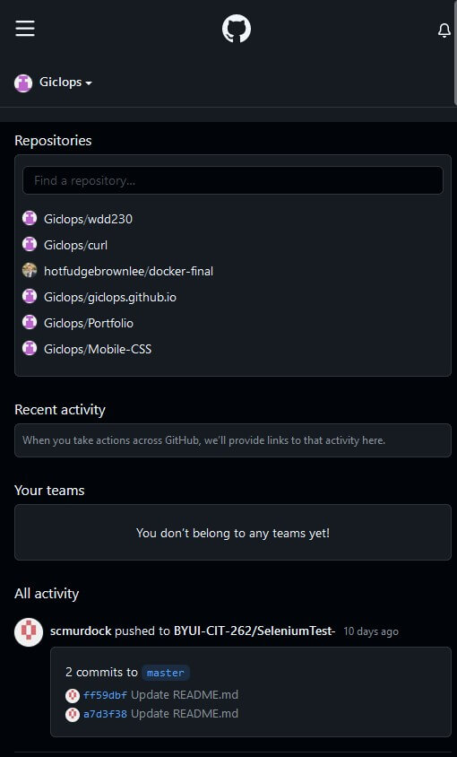

Alignment
Github
https://github.com/ Github is a website that is used to store code that can be made public and is often used for collaborative projects. This homepage has 2 main sections: the top section that has your personal repositories and teams and the second section that contains a feed of all activity of repositories you follow. The contaning boxes in each section are aligned with each other to help show that they are connected.
Proximity
Reddit is a massive forumn based website used for almost every purpose under the sun, and over. This site has related objects in close proximity with one another helping the users comprehension for what each thing is for. For example all of the login/signup/account information is located in the top right corner. The popular/trending threads are next to each other near the top, and various suggested forumn posts are on top of one another farther down.
Contrast
D&D Beyond
https://www.dndbeyond.com/D&D Beyond is a very well done website that caters to those who play D&D. There are 4 links located at the top and they are designed to look like white boxes with colored text and transparent images. Those colors provide a stark contrast to the dark background which along with the shadows show the user that these are designed as links or buttons to take you elsewhere on the website.